This manual will go over setting up MongoDB manually in GCP. A lot of this information comes from the following two websites:
https://www.linode.com/docs/databases/mongodb/build-database-clusters-with-mongodb/
https://www.bmc.com/blogs/how-to-setup-mongodb-cluster/
However, this manual will cover how to do it specifically in GCP as simply as possible without using any serverless options.
The MongoDB setup will look like this by the end of the tutorial, but you should be able to configure it however you like by the end of this.
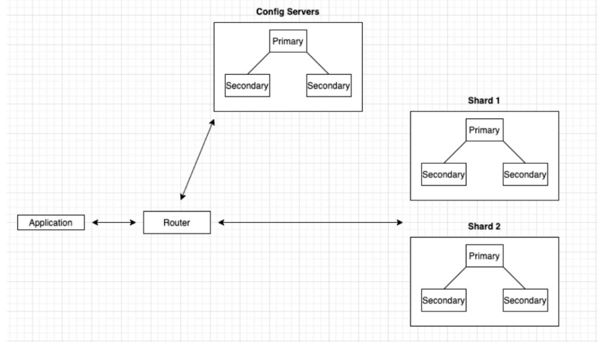
- The first step is to log into your GCP account and navigate to your project. 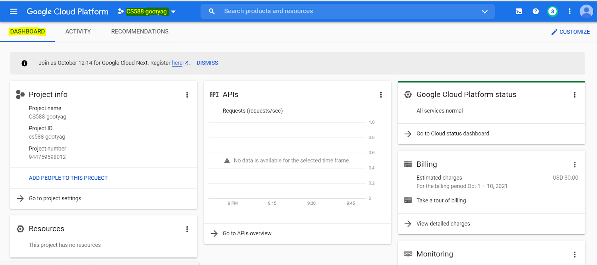
Before anything else, we're going to want to create firewall rules to allow the following ports 27017, 27018, 27019
Note - you can read more about why we are creating firewall rules for these ports here: https://docs.mongodb.com/manual/reference/default-mongodb-port/ to communicate with our soon to be created VM instances.
- Start by going to the
Menu🡪Networking🡪VPC Network🡪Firewall
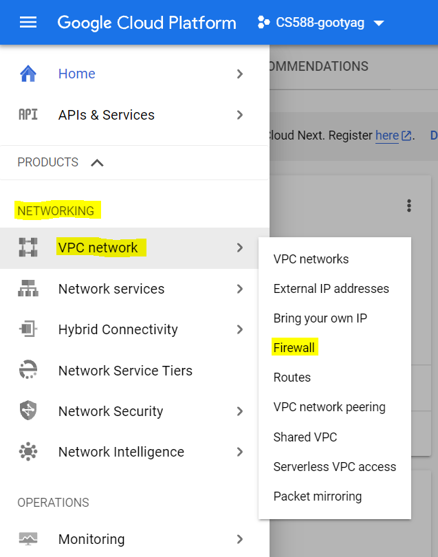
IMPORTANT UPDATE: In the images below (for each port), you will notice that the source IP range is 0.0.0.0/0 which is the entire internet. Do not enter this! This is an easy way to get hacked as hackers often scan the internet for such vulnerabilities. Instead, use your own IP address and the IP addresses of your teammates who are working on the same database.
- Select Create Firewall Rule
- Create the first Firewall rule to allow port
27017
- Name - mongo-default
- Target - All instances in the network
- Source IP ranges - 0.0.0.0/0
- Check tcp in Protocols and ports and give the port as 27017
- Leave the other fields with default values
- Click on Create
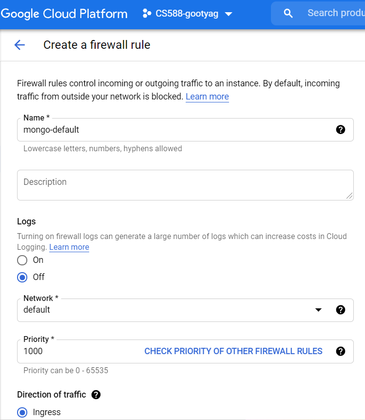
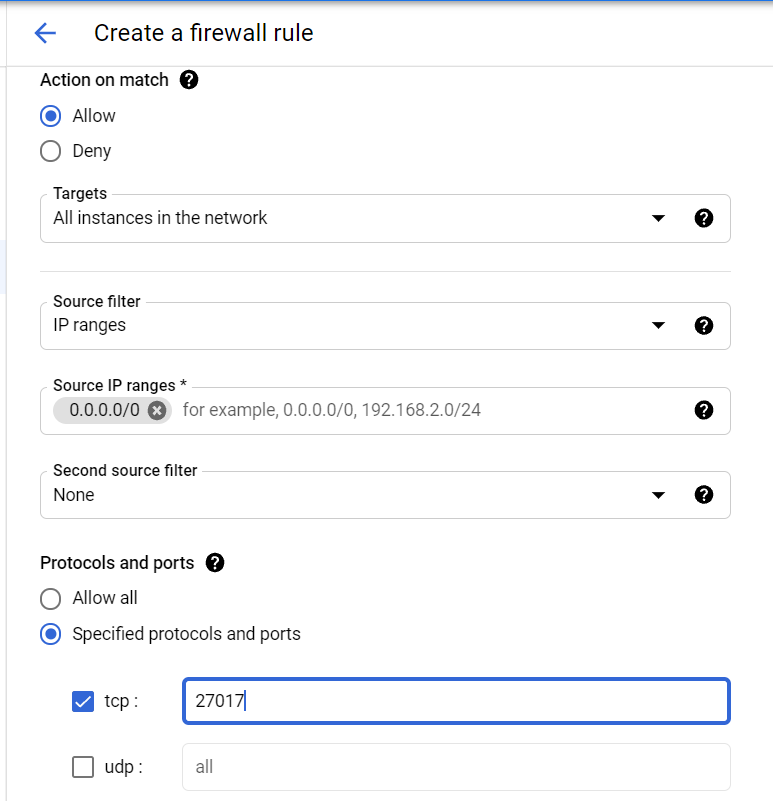
- Create the second Firewall rule to allow port
27018
- Name - mongo-shard
- Target - All instances in the network
- Source IP ranges - 0.0.0.0/0
- Check tcp in Protocols and ports and give the port as 27018
- Leave the other fields with default values
- Click on Create

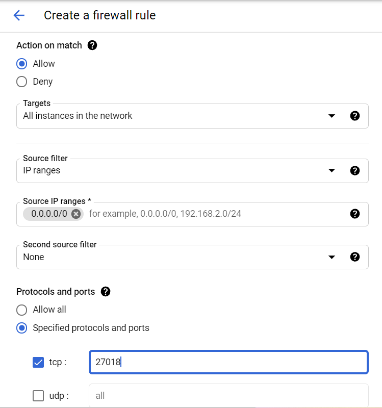
- Create the third Firewall rule to allow port
27019
- Name - mongo-config
- Target - All instances in the network
- Source IP ranges - 0.0.0.0/0
- Check tcp in Protocols and ports and give the port as 27019
- Leave the other fields with default values
- Click on Create
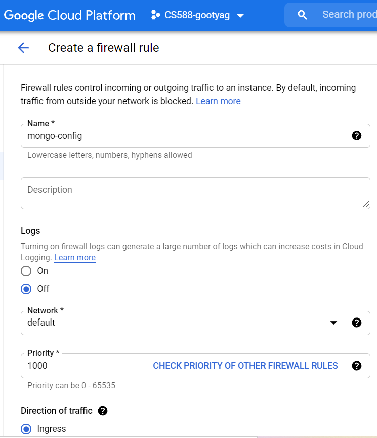
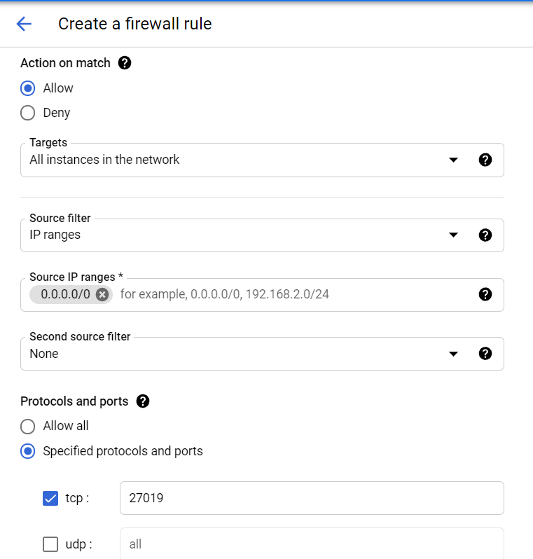
- Your Firewall rules should look like this now
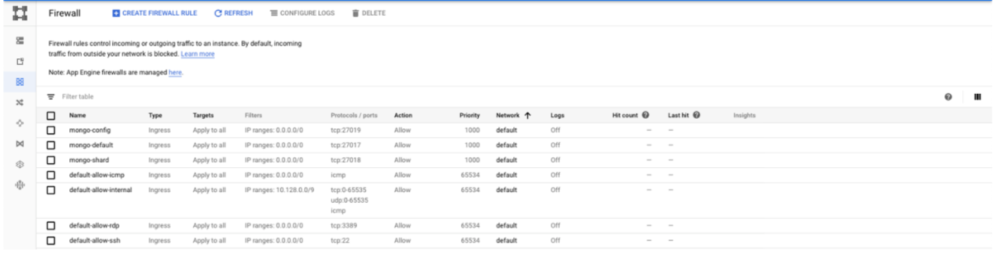
- Go back to the
Menu🡪Compute Engine🡪VM Instance
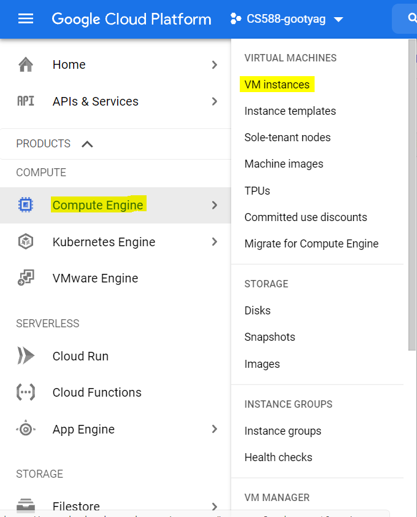
- We'll be creating ten VM instances:
- One will be for the router
- Three will be a set of config servers (one primary and two secondaries),
- Three will be for one shard set (one primary and two secondaries),
- Last three will be for the second shard set (one primary and two secondaries).
This represents the setup from the image in Part 1 of this codelab, but, as mentioned before, you should be able to configure the installation differently. (You just need to have a router and config server; the number of shard sets is up to you.)
- We'll start by creating the config set. Click on Create Instance.
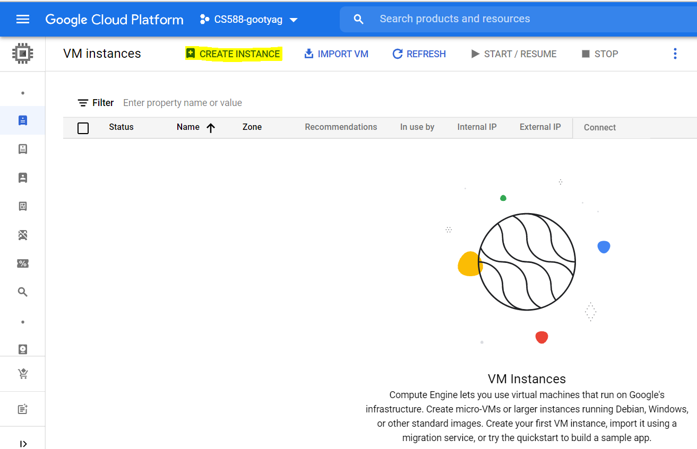
- For this codelab, we'll just be using the same configuration for all instances but feel free to experiment with different configurations. Click on New VM instance from template and Create instance template.
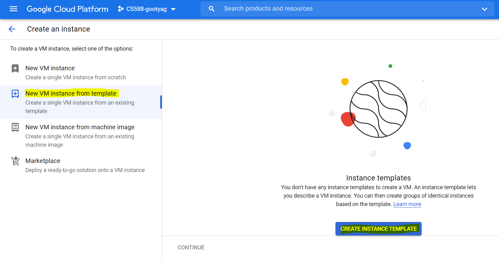
- Here is the configuration that I will be using – make sure to change the boot disk to ubuntu to follow the rest of this tutorial without any problems.
- Name - mongo-template
- Machine Series - N1
- Change the boot disk to Ubuntu 16.04 LTS
- Leave the rest of the fields with default values
- Click on Create
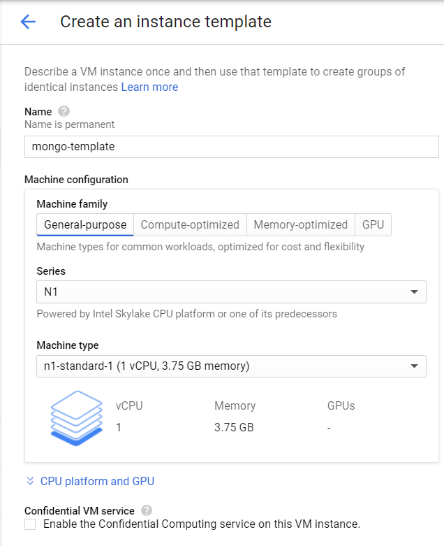
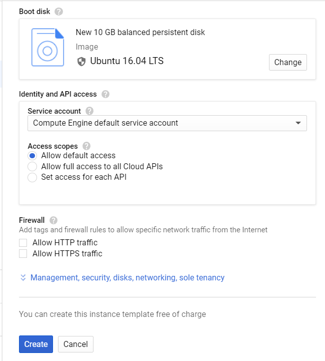
- Go back to VM instances and click create (repeat step 3). Select New VM instance from the template and select the new template that you created.
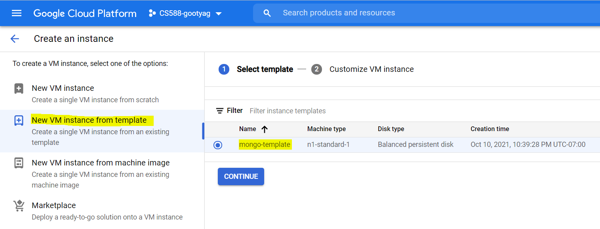
- The VM instance will be populated from the template. Change the following
- Name - mongo-config-1
- Region - us-west1 (Oregon)
- Zone - us-west1-b
- Leave the rest of the fields with default values
- Click on create
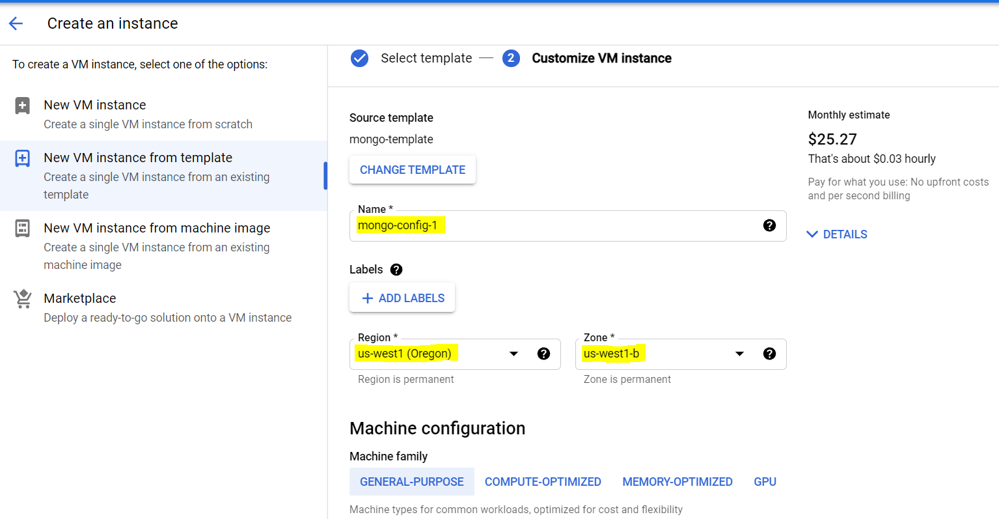
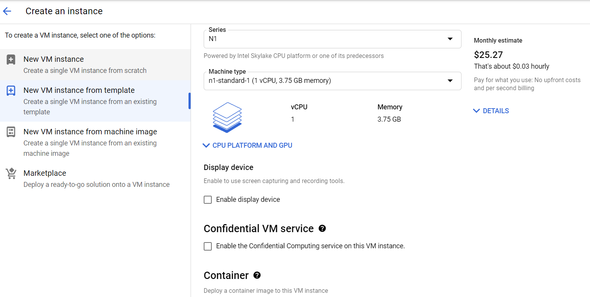
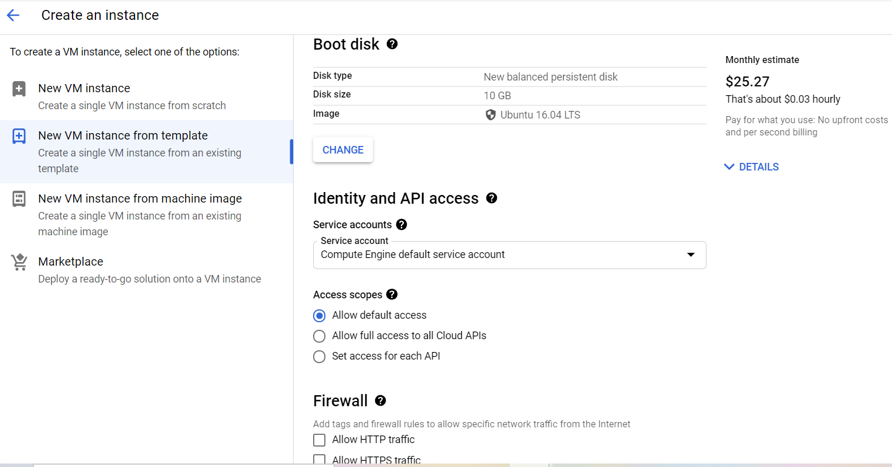
- Note: The first VM instance that I created is named
mongo-config-1. The next two VM instances I will name aremongo-config-2andmongo-config-3respectively.
- The next step is to SSH into the VM instance that you created and update the system and install the necessary packages.
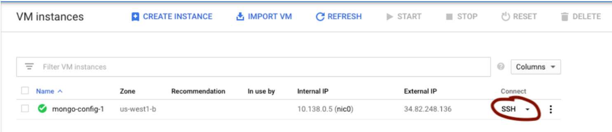
- Once you SSH into the instance, copy and paste the following commands:
wget https://repo.mongodb.org/apt/ubuntu/dists/xenial/mongodb org/4.0/multiverse/binary-amd64/mongodb-org-server_4.0.5_amd64.deb
sudo dpkg -i mongodb-org-server_4.0.5_amd64.deb
wget https://repo.mongodb.org/apt/ubuntu/dists/xenial/mongodb org/4.0/multiverse/binary-amd64/mongodb-org-shell_4.0.5_amd64.deb
sudo dpkg -i mongodb-org-shell_4.0.5_amd64.deb
wget https://repo.mongodb.org/apt/ubuntu/dists/xenial/mongodb org/4.0/multiverse/binary-amd64/mongodb-org-mongos_4.0.5_amd64.deb
sudo dpkg -i mongodb-org-mongos_4.0.5_amd64.deb
- Copy and paste the following command:
sudo vim /etc/mongodConfig.conf
- In this new file paste the following:
storage: dbPath: /var/lib/mongodb journal: enabled: true systemLog: destination: file logAppend: true path: /var/log/mongodb/mongodConfig.log net: port: 27019 bindIp: 172.31.46.15 sharding: clusterRole: configsvr replication: replSetName: ConfigReplSet
- Replace the above bindIp with the internal IP address from the VM
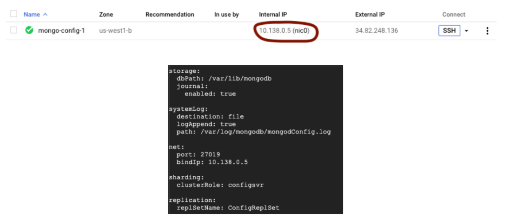
- Our first VM instance is now configured. We now need to create two more VM instances (for simplicity we will call them mongo-config-2 and mongo-config-3) and repeat the same steps as above. Just keep using the same VM instance template for all ten instances (including these next two).
- You should now have three VM instances like the following:
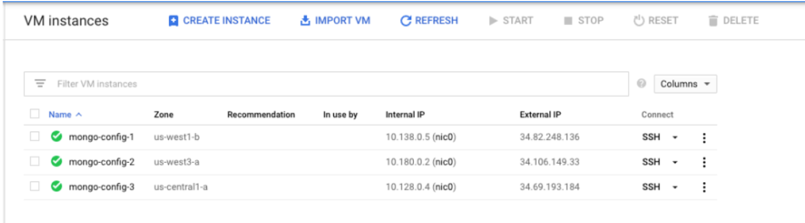
- SSH into each instance and start the process with the following command:
sudo mongod --config /etc/mongodConfig.conf&
- In one of the instances, log in to the mongo shell. Replace the IP address below with your own internal IP address (I'm using the mongo config-1 internal IP address).
mongo 10.138.0.5:27019
- This next part is a little tricky. It's best to type this out on a text file and then copy it over to the shell to avoid making any mistakes. Copy and paste the following (Make sure to enter your own internal IP addresses from each of the three config servers):
rs.initiate( { _id: "ConfigReplSet", configsvr: true, members: [ { _id: 0, host: "10.138.0.5:27019" }, { _id: 1, host: "10.180.0.2:27019" }, { _id: 2, host: "10.128.0.4:27019" } ] } )
- Now your three VM instances are a replica set. You should have something like the following:
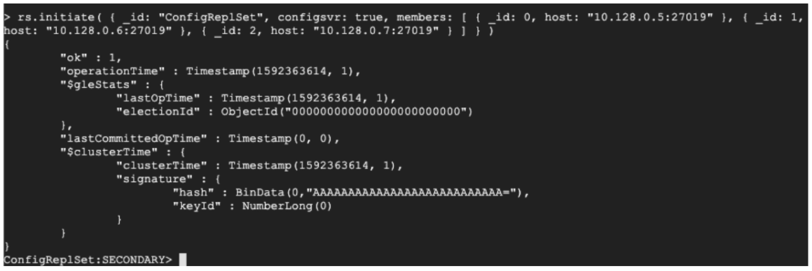
- We will now move on to creating the query router. This will be the access point for any application wanting to talk with the MongoDB system.
- Begin by creating a new VM instance (I call mine
mongo-query-router) and populate it with the template that we created. Then SSH into it.
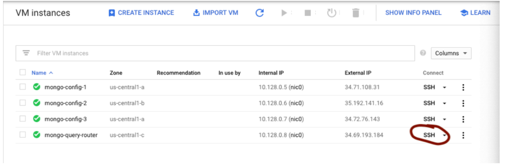
- Once you SSH into the instance, copy and paste the following commands:
wget https://repo.mongodb.org/apt/ubuntu/dists/xenial/mongodb org/4.0/multiverse/binary-amd64/mongodb-org-server_4.0.5_amd64.deb
sudo dpkg -i mongodb-org-server_4.0.5_amd64.deb
wget https://repo.mongodb.org/apt/ubuntu/dists/xenial/mongodb org/4.0/multiverse/binary-amd64/mongodb-org-shell_4.0.5_amd64.deb
sudo dpkg -i mongodb-org-shell_4.0.5_amd64.deb
wget https://repo.mongodb.org/apt/ubuntu/dists/xenial/mongodb org/4.0/multiverse/binary-amd64/mongodb-org-mongos_4.0.5_amd64.deb
sudo dpkg -i mongodb-org-mongos_4.0.5_amd64.deb
- Copy and paste the following command
sudo vim /etc/mongoRouter.conf
- Copy and paste the following in the new file you created:
systemLog: destination: file logAppend: true path: /var/log/mongodb/mongoRouter.log net: port: 27017 bindIp: 10.128.0.8 sharding: configDB: ConfigReplSet/10.128.0.5:27019,10.128.0.6:27019,10.128.0.7:27019
- Replace the bindIp with the query router's internal IP address. At the very bottom, replace the IP addresses with your three config internal IP addresses.
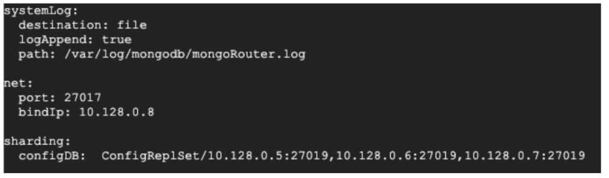
- Save the file and return to the console. Start the process
sudo mongos --config /etc/mongoRouter.conf&
- Log in to the console to check for any errors (use your internal IP address instead):
mongo 10.128.0.8:27017
- You should have something like this:
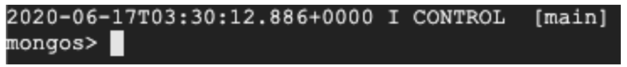
- The router is now done. We just need to create two sets of shard clusters.
- As before, create three new VM instances and populate it with the template (this will be for our first sharded set). I will call mine
mongo-shard-1-1,mongo-shard-1-2,mongo shard-1-3. It should look like the following below:

- SSH into each of the three instances we just created and perform the following steps (32- 35).
- Paste the following commands:
wget https://repo.mongodb.org/apt/ubuntu/dists/xenial/mongodb org/4.0/multiverse/binary-amd64/mongodb-org-server_4.0.5_amd64.deb
sudo dpkg -I mongodb-org-server_4.0.5_amd64.deb
wget https://repo.mongodb.org/apt/ubuntu/dists/xenial/mongodb org/4.0/multiverse/binary-amd64/mongodb-org-shell_4.0.5_amd64.deb
sudo dpkg -I mongodb-org-shell_4.0.5_amd64.deb
wget https://repo.mongodb.org/apt/ubuntu/dists/xenial/mongodb org/4.0/multiverse/binary-amd64/mongodb-org-mongos_4.0.5_amd64.deb
sudo dpkg -i mongodb-org-mongos_4.0.5_amd64.deb
- Paste the following command:
sudo vim /etc/mongodShard.conf
- In the file, paste the following and replace the bindIP with the internal IP for that VM:
storage: dbPath: /var/lib/mongodb journal: enabled: true systemLog: destination: file logAppend: true path: /var/log/mongodb/mongodShard.log net: port: 27018 bindIp: 10.128.0.9 sharding: clusterRole: shardsvr replication: replSetName: ShardReplSet1
- Start the process in each of the instances:
sudo mongod –config /etc/mongodShard.conf&
- Using one of the instances, log in to any of the three you created using its internal IP address.
mongo 10.128.0.9:27018
- We will now initiate the replica set as we did before. Use the following command but replace the IP addresses with your own internal IP addresses for the shard servers.
rs.initiate( { _id: "ShardReplSet1", version: 1, members: [ { _id: 0, host: "10.128.0.9:27018" }, { _id: 1, host: "10.168.0.2:27018" }, { _id: 2, host: "10.138.0.6:27018" } ] } )
After executing the above command, the response should look similar to the below screenshot.
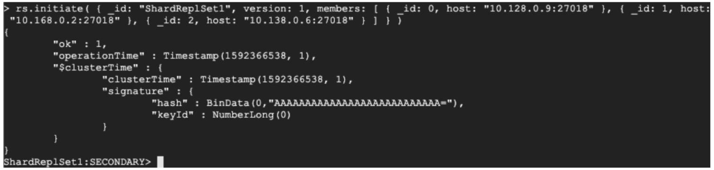
- Now we need to add the shard to the system. Go back to the config server and connect to the router.
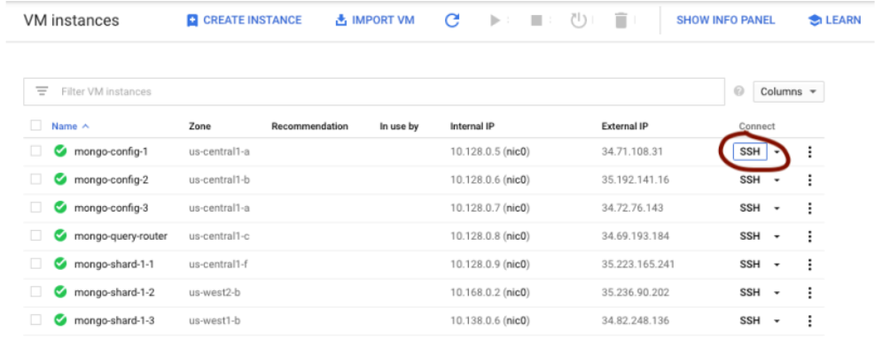
- Enter the following command (with your query router's internal IP):
mongo 10.128.0.8:27017
- From here, add each shard individually (Use your internal IP address):
sh.addShard( "ShardReplSet1/10.128.0.9:27018")
sh.addShard( "ShardReplSet1/10.168.0.2:27018")
sh.addShard( "ShardReplSet1/10.138.0.6:27018")
After executing the above command, the response should look similar to the below screenshot.
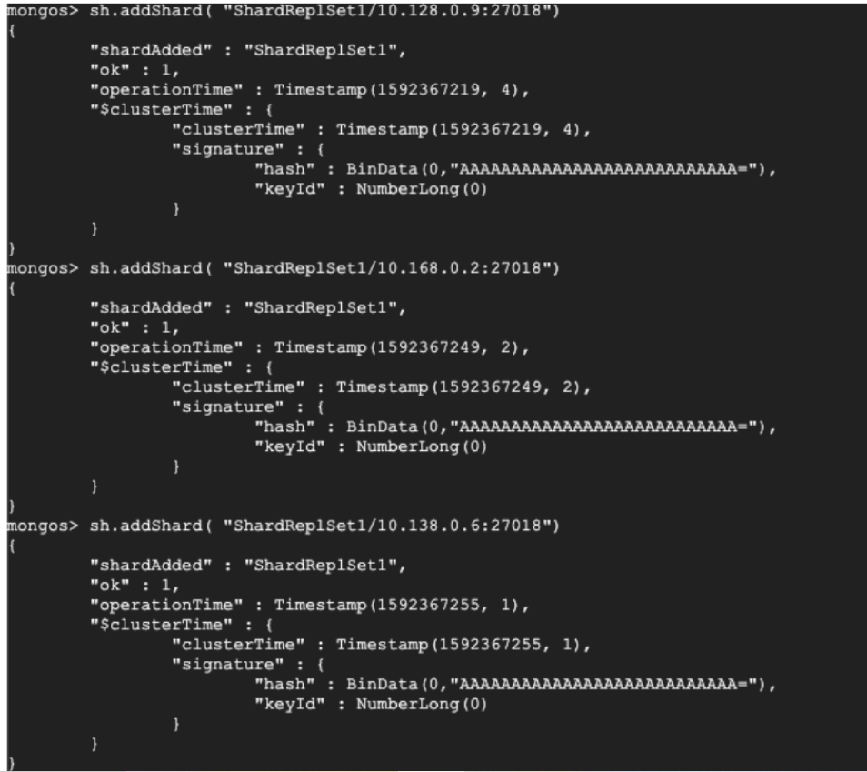
- At this point you can create as many shard sets as you want by repeating the appropriate steps above. Just make sure to change the replSetName so that it's not ShardReplSet1 again.
- I created an additional shard set with replSetName: ShardReplSet2 and each instance, named:
mongo-shard-2-1,mongo-shard-2-2,mongo-shard-2-3. Finally, all instances are created and configured properly.
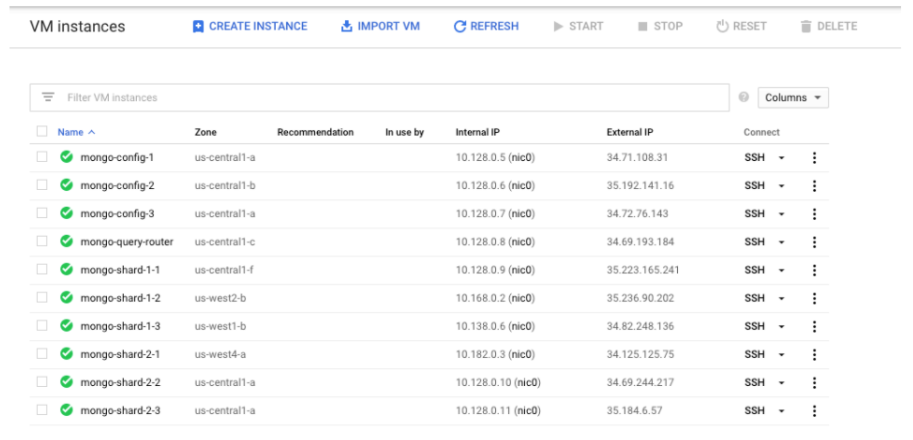
- You can connect to your database using an application like MongoDB Compass which is what I used to import data
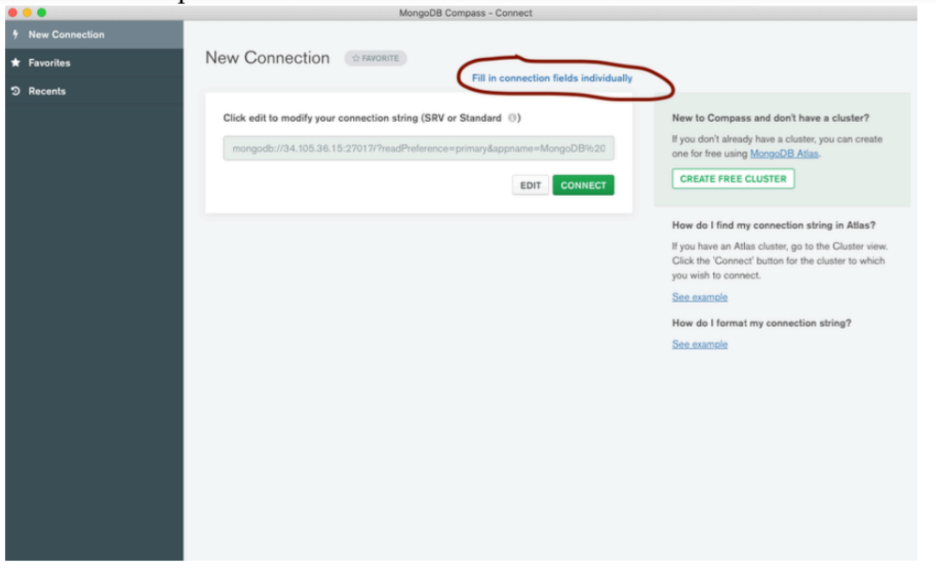
- Enter the external IP address of your query router into the field.
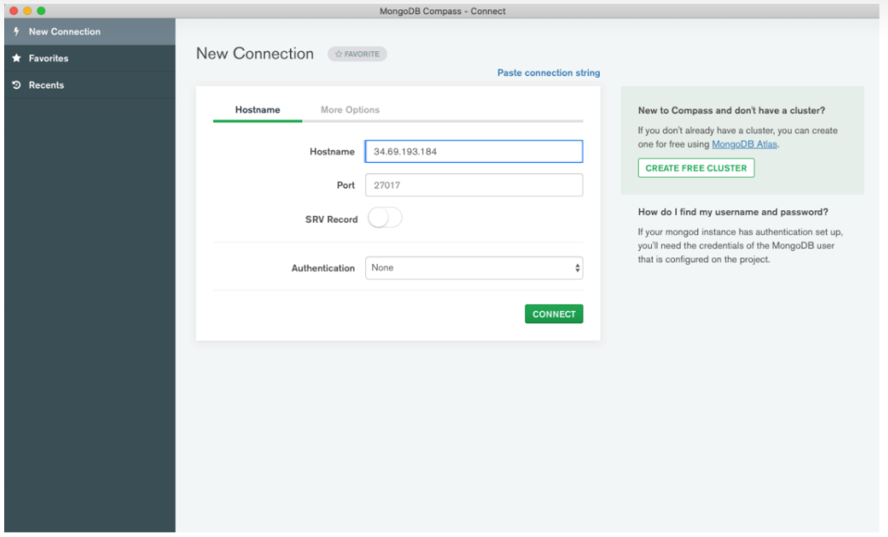
- Your system should connect.
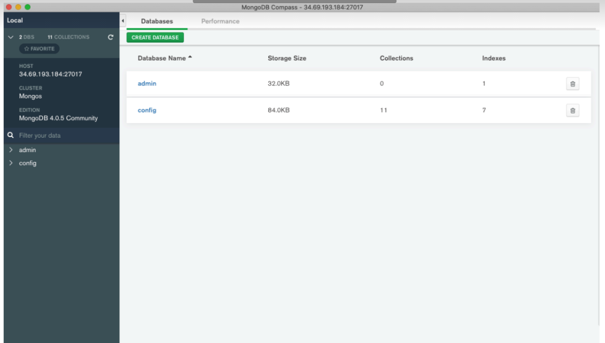
- Any application you use to connect to your database (whether to query or import/delete data) will connect through your router.
This codelab should help get you started on creating and configuring your MongoDB in GCP. There are a few things to mention. We didn't add any authentication to the system. If you open up your firewall to all IP addresses, anyone with your external IP address will be able to connect to your database (and there are bots out there crawling IP addresses looking for MongoDB installs. Adding authentication is pretty straightforward – the first link provided in Part 1 of the codelab walks through it.
As for sharding data, here is a good video that explains how to do it:
https://www.youtube.com/watch?v=Rwg26U0Zs1o
Also, you'll want to stop all your instances when you're not using them, otherwise they will burn through your billing credits. Keep in mind when you do this then your processes will stop, and you will have to start up the process for each instance when they start. An easy way to automate it is to use a startup script. GCP has good documentation for this. Here are the commands for starting up the processes:
Config Servers
sudo mongod –config /etc/mongodConfig.conf&
Router Server
sudo mongos –config /etc/mongoRouter.conf&
Shard Servers
sudo mongod –config /etc/mongodShard.conf&
Note - When you're completely done with your project you can delete the entire project from GCP and that will release all of the resources being used.